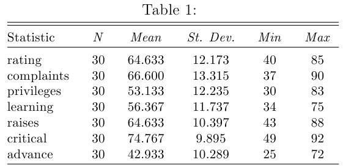
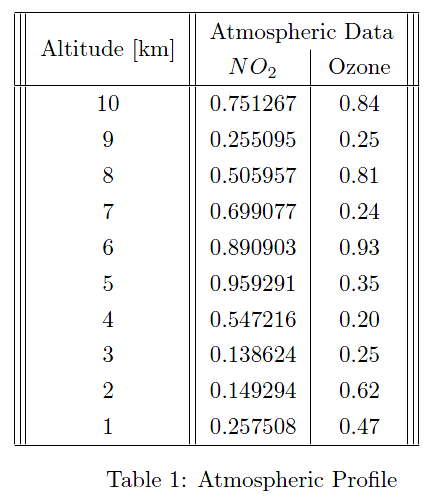
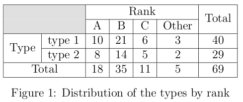
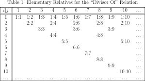
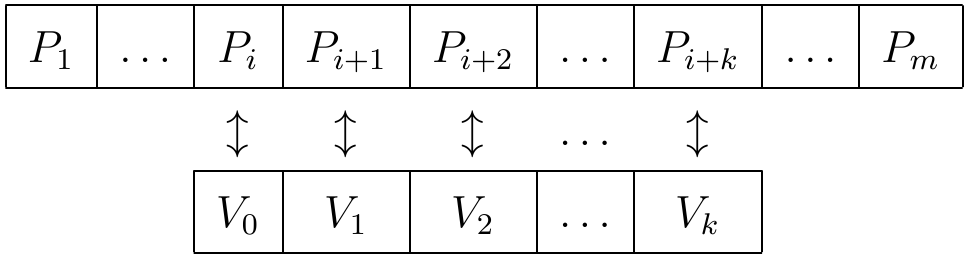

IWP 2013/2014
Informatyczne wspomaganie pracy matematyka
PunktacjaSage
Zajęcia 12 - 15.01.2014 - Rachunek różniczkowy
Proszę wykonać zadania 3.1 i 3.2 (Elementy rachunku różniczkowego) ze strony, w taki sposób, by odpowiedź na każde zadanie była widoczne we własnym polu, wszystkie zadania w jednym worksheet.
Punkty: 10
Zajęcia 11 - 08.01.2014 - Wstęp
Proszę wykonać zadania 1.* i 2.* ze strony, w taki sposób, by odpowiedź na każde zadanie była widoczne we własnym polu. Polecany sposób uruchomiania Sage'a to 1.3, na komputerach wydziałowych pod linuksem.
Punkty: 10
Excel
Zajęcia 10 - 11.12.2013 - Regresja
Proszę wykonać zadania z pliku, zarówno te w tekście jak i zadania na końcu. W tekście jest podana ścieżka, z której można ściągnąć dane i odpowiedzi. Proszę korzystać z odpowiedzi jedynie w ostateczności lub w ramach kontroli własnych wyników.
Punkty: 10
Zajęcia 09 - 04.12.2013 - "Szukaj wyniku" i "Solver"
Proszę wykonać zadania z pliku. W przypadku problemów z językiem angielskim można dosiąść się do osoby radządzej sobie.
Punkty: 10
Zajęcia 08 - 27.11.2013 - Tabele przestawne
Zadanie 1
- Ściągamy plik i otwieramy.
- Klikamy raz na dowolnym polu wewnątrz tabeli.
- Wstawianie -> Tabela przestawna. Potwierdzamy
- Teraz, dla przykładu, aby wyświetlić sumę sprzedaży w poszczególnych miesiącach, wybieramy pola Miesiąc i Sprzedaże, w wierszach wstawiamy miesiąc, w wartościach suma sprzedaży.
- Aby wyświetlić ilość sprzedanych produktów w danych miesiącach przez wszystkich sprzedawców, w wierszach wstawiamy Sprzedawców a pod spodem Miesiące, w wartościach wstawiamy sumę sprzedaży.
Zadanie 2
- Ściągamy plik i otwieramy.
- Klikamy na komórce w tabeli i dodajemy tabele przestawną
- Do pola danych przeciągamy nazwe produktu i trzy razy sprzedaż
- Do pola wierszy przenosimy kategorie
- Ustawiamy pola wartości tak, aby mieć sumę sprzedaży, liczbę nazw produktu i dwie sumy sprzedaży.
- Klikamy na pierwszej sumie sprzedaży prawym przyciskiem myszy, wybieramy "ustawienia pola", następnie format liczby, liczbową z zerową ilością miejsc dziesiętnych i separatorem tysięcznym
- Robimy to z pozostałymi kolumnami
- Klikamy nagłowek drugiego pola z sumą sprzedaży prawym przyciskiem myszki, wybieramy ustawienia pola i w podsumowaniu według wybieramy Średnia.
- W trzecim polu z sumą stosujemy maksimum.
- Zmieniamy nazwę sume pierwszą an "Sprzedaż", program powie nam, że istnieje juz takie pole w oryginalnej tabeli - aby temu zapobiec, nazwę zmieniamy na "Sprzedaż " (dodana jedna spacja)
- Pozostałe nagłowki zmieniamy na "ilośc Produktów" (dla licznik z nazwa produktu), Średnia sprzedaż i Maksimum.
- Zmieńmy kolejność pól tak, aby ilośc Produktów była na końcu tabeli.
Zadanie 3
Na podstawie tego pliku tworzymy tabelę przestawną wyglądającą jak ten plik.
{kind=link}
Zadanie 4
Na podstawie tego samego pliku co w zadaniu 3 tworzymy tabelę przestawną wyglądającą jak ten plik.
{kind=link}
Zadanie 5
Na podstawie tego samego pliku co w zadaniu 3 za pomocą tabel przestawnych odpowiedz na pytanie: Która kategoria produktów sprzedaje się najlepiej w poszczególnych krajach.
Punkty: 10
Zajęcia 07 - 20.11.2013 - Wykresy
Proszę wykonać zadania ze strony http://www.cob.sjsu.edu/kwan_p/91L/ExcelCharts20130401.htm
Punkty: 10 za trzy ostatnie (dodatkowe 2 punkty za każde zadanie ze środka tekstu)
Zajęcia 06 - 13.11.2013 - Przypomnienie/Powtórka
- Proszę pobrać plik oceny.xlsx i otworzyć w Excel.
- W kolumnie „Punkty końcowe” proszę obliczyć średnią ważoną ocen. Egzaminy wyznaczają 30% oceny, punkty dodatkowe 10%. Proszę umieścić wagi ocen we własnych komórkach i wykorzystać je podczas obliczeń. W razie czego, powinna być możliwość szybkiej zmiany wag i automatycznej zmiany oceny.
- Pod każdą kolumną należy wyznaczyć średnia liczbę punktów, minimum i maksimum.
- Pod tabelą ocen wprowadź rozkład punktów i oceń. Należy w tym celu podać minimalną liczbę punktów potrzebną do uzyskania podanej oceny.
- W kolumnie „Ocena” proszę wprowadzić formułę, która na podstawie rozkładu ocen oblicza ocenę każdego ucznia. Zmiana punktów, wag, rozkładu lub nazwy oceny powinno automatycznie aktualizować wartości kolumny „Ocena”.
- Sformatować arkusz tak, aby był wizualnie bardziej „atrakcyjny”.
Punkty: 10
LaTeX
Materiały pomocnicze
- Ściąga: http://www.stdout.org/~winston/latex/latexsheet-a4.pdf
- Kurs (przygotowany przez dra Marcina Borkowskiego): http://mbork.pl/LaTeX_workshop
- Nie za krótkie wprowadzenie do systemu LaTeX: ftp://tug.ctan.org/pub/tex-archive/info/lshort/polish/lshort2e.pdf
- The visual LaTeX FAQ: http://www.tex.ac.uk/ctan/info/visualFAQ/visualFAQ.pdf
- The comprehensive LaTeX symbol list: http://www.ctan.org/tex-archive/info/symbols/comprehensive/symbols-a4.pdf
Zajęcia 05 - 06.11.2013 - Latex 05
Przygotować "sensowną" prezentację na dowolny temat (np. hobby, o sobie, ulubione twierdzenie matematyczne, ...) spełniającą następujące wymagania:
- Jest po polsku;
- Składa się z co najmniej 8 slajdów;
- Zawiera slajd tytułowy;
- Zawiera co najmniej dwie grafiki (wycentrowane, dopasowane do rozmiaru slajdów);
- Zawiera co najmniej jedną tabelkę wykorzystującą pakiet "booktab"; (wycentrowana, z tytułem pod tabelką)
- Korzysta z innego niż standardowego szablonu graficznego;
- Indywidualnie dobrany schemat kolorów inny niż standardowy;
- Wykorzystać nie mniej niż dwa razy środowisko "block";
- Wykorzystać efekty stopniowego wyświetlania elementów np. za pomocą "pause" lub innych metod;
- ...
Punkty: 10
Zajęcia 04 - 23.10.2013 - Latex 04 - Prezentacje (Beamer)
- Bardzo kompletna (ale też skomplikowana) instrukcja do beamer: beameruserguide.pdf
Proszę utworzyć prezentację za pomocą Latex Beamer wyglądającą jak cla2010.pdf . Należy wykorzystać szablon i pliki graficzne z archiwum szablon.zip
Punkty: 10
Zajęcia 03 - 16.10.2013 - Latex 03 - Tabelki
Materiały do tabel: http://en.wikibooks.org/wiki/LaTeX/Tables
Proszę utworzyć pusty dokument LaTex o dowolnej klasie dokumenty i stworzyć w nim następujące tabelki. Tabelki zostały "wykradzione" z różnych miejsc w internecie, nie trzeba się zatem specjalnie przejmować treścią, rozmiarem ani pozycją tytułów tabelek, ale należy dokładnie odtworzyć ich strukturę.
- 
- 
- 
- 
- Dodatkowa dla chętnych. Cały obrazek da się zrealizować za pomocą jednej tabelki
 - Proszę umieśić wszystkie tabelki w środowisku
table, podać wymyślony tytuły za pomocącaptioni dodać na początku dokumentu spis tabel.
Punkty: 10 (15 z zadaniem dla chętnych)
Zajęcia 02 - 09.10.2013 - Latex 02
Proszę odtworzyć dokument w LaTeXu wyglądający jak Latex02.docelowy.pdf.
Proszę nie dodawać podwójnych podkreśleń, mają one tylko pokazać, gdzie Państwo muszą korzystać z \cite, \ref i \pageref.
Nie trzeba przejmować się szerokością marginesów.
Jak się za to zabrać?
- Utworzyć pusty dokument źródłowy
Latex02.tex. - Wykorzystać klasę dokumentu
articlez opcjamia4paperi12pt. - Trzeba zdefiniować środowisko twierdzenia za pomocą
newtheorem. - Utworzyć część tytułową za pomocą
\maketitlei odpowiednich informacji w preambuli. Można podać więcej niż jednego autora w części\authorwstawiając\andpomiędzy nazwiska. - Wykorzystać
\tableofcontents. - Aby stworzyć sekcję (podrozdział) bez numeracji, wykorzystać
\section*. - Proszę wykorzystać
\label, aby oznaczyć pierwszy podrozdział, równanie oraz twierdzenie. Następnie za pomocą\refodwołać się do tych elementów w odpowiednich miejscach (zaznaczonych podwójnym podkreśleniem). Polecenielabelnależy umieścić w tym samym miejscu co\begin{.... Najlepiej użyć jednoznacznych nazw dla kluczy, np.sec.coś, poprawi to czytelność. - Część bibliograficzną tworzymy następująco:
\begin{thebibliography}{9} \bibitem{wilkins} B. J. M. Wilkins, ``Topological Dynamics and the Haddock Fishery'', Unpublished, 1987. \bibitem{strainer-wilkins} T. I. Strainer \& B. J. M. Wilkins 1993, A new result on Drivle's Theorem, {\em Proc. Iceland Cod Fish Soc. Lond. Ser. D}, {\bf 134} (8678--8679). \end{thebibliography}Wykorzystać\cite, aby odwołać się do elementów bibliografii. Nawiasy w okół numerów zostaną dodane automatycznie. Można cytować kilka prac równocześnie za pomocą\cite{ref1,ref2}.
Punkty: 10
Zajęcia 01 - 02.10.2013 - Latex 01
Proszę uzupełnić wzory matematyczne w szablonie Latex01.zrodlowy.tex tak, aby końcowy wynika wyglądał jak plik pdf Latex01.docelowy.pdf (autorem zadania jest dr Bogdan Sołtys). Na Państwa komputerach powinny być zainstalowane edytory Latex: TeXMaker, TeXWorks, TeXnicCenter, mogą Państwo korzystać z dowolnego edytora.
Punkty: 10